感性に作用するメディア表現
東京工芸大学芸術学部
インタラクティブメディア学科 助教
中島 武三志

氏名 |
中島 武三志（なかじま むさし） |
|---|---|
年齢 |
34 歳 |
研究分野 |
感性情報学、認知心理学、バーチャルリアリティ... |
-
テレビ
-
電話
-
SNS


-
写真は、元の風景を
忠実に再現することが求められる -
電子メールは、できるだけ速く正確に
送受信できることが求められる


-
映画
-
音楽
-
アニメーション


-
手書きの手紙
-

CGのデフォルメ表現
[宇津木 2012]

-
ドアを開けると、
過去の自分が現れる。 -

本をめくると、
文字が踊り出す。 -
 浴槽をこすると、
DJのスクラッチができる。